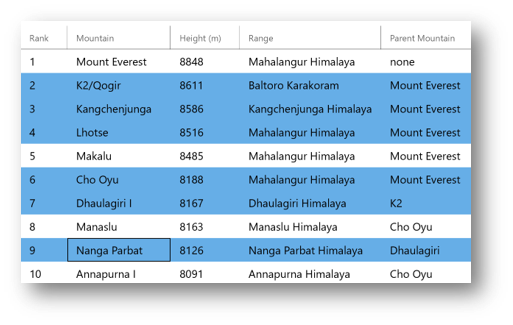

DataGrid keyboard navigation and selection modes (Archived)
Warning
This document has been archived and the component is not available in the current version of the Windows Community Toolkit.
While there are no immediate plans to port this component directly to 8.x, it's important to understand that:
- The WCT 7.x DataGrid is still usable alongside WCT 8.x components for existing projects.
- The DataGrid control has been deprecated in favor of the new DataTable component.
For new development, we recommend using the DataTable component which offers improved functionality and is actively maintained. If you have specific needs that DataTable doesn't meet, please consider contributing to WCT Labs where component improvements are prototyped and incubated.
For more information:
- DataGrid (Archived) concept docs
- DataGrid discussion in Labs
- Community Toolkit GitHub repository
- Documentation feedback and suggestions
Original documentation follows below.
Keyboard behaviors
Keyboarding in Column headers
The user can use TAB key to set keyboard focus to the current column headers. If the user can sort the columns, pressing ENTER key on the column header sorts that column. LEFT/RIGHT arrow keys move focus to column headers to the left and right of the currently focused column header. DOWN arrow key from a column header moves focus to the cell in the first row directly below the column header.
Keyboarding in cells
The following table lists the default keyboard behavior within the cells of the DataGrid control.
| Key or key combination | Description |
|---|---|
| DOWN ARROW | Moves the focus to the cell directly below the current cell. If the focus is in the last row, pressing the DOWN ARROW does nothing. |
| UP ARROW | Moves the focus to the cell directly above the current cell. If the focus is in the first row, pressing the UP ARROW does nothing. |
| LEFT ARROW | Moves the focus to the previous cell in the row. If the focus is in the first cell in the row, pressing the LEFT ARROW does nothing. If the focus is on a row group header, pressing the LEFT ARROW collapses the group. |
| RIGHT ARROW | Moves the focus to the next cell in the row. If the focus is in the last cell in the row, pressing the RIGHT ARROW does nothing. If the focus is on a row group header, pressing the RIGHT ARROW expands the group. |
| HOME | Moves the focus to the first cell in the current row. |
| END | Moves the focus to the last cell in the current row. |
| PAGE DOWN | Scrolls the control downward by the number of rows that are displayed. Moves the focus to the last displayed row without changing columns. If the last row is only partially displayed, scrolls the grid to fully display the last row. |
| PAGE UP | Scrolls the control upward by the number of rows that are displayed. Moves focus to the first displayed row without changing columns. If the first row is only partially displayed, scrolls the grid to fully display the first row. |
| TAB | If the current cell is in edit mode, moves the focus to the next cell in the current row. If the focus is already in the last cell of the row, commits any changes that were made and moves the focus to the first cell in the next row. If the focus is in the last cell in the control, moves the focus to the next control in the tab order of the parent container. If the current cell is not in edit mode, moves the focus to the next control in the tab order of the parent container. |
| SHIFT+TAB | If the current cell is in edit mode, moves the focus to the previous cell in the current row. If the focus is already in the first cell of the row, commits any changes that were made and moves the focus to the last cell in the previous row. If the focus is in the first cell in the control, moves the focus to the previous control in the tab order of the parent container. If the current cell is not in edit mode, moves the focus to the previous control in the tab order of the parent container. |
| CTRL+DOWN ARROW | Moves the focus to the last cell in the current column. |
| CTRL+UP ARROW | Moves the focus to the first cell in the current column. |
| CTRL+RIGHT ARROW | Moves the focus to the last cell in the current row. |
| CTRL+LEFT ARROW | Moves the focus to the first cell in the current row. |
| CTRL+HOME | Moves the focus to the first cell in the control. |
| CTRL+END | Moves the focus to the last cell in the control. |
| CTRL+PAGE DOWN | Same as PAGE DOWN. |
| CTRL+PAGE UP | Same as PAGE UP. |
| F2 | If the DataGrid.IsReadOnly property is false and the DataGridColumn.IsReadOnly property is false for the current column, puts the current cell into cell edit mode. |
| ENTER | Commits any changes to the current cell and row and moves the focus to the cell directly below the current cell. If the focus is in the last row, commits any changes without moving the focus. |
| ESC | If the control is in edit mode, cancels the edit and reverts any changes that were made in the control. If the underlying data source implements IEditableObject, pressing ESC a second time cancels edit mode for the entire row. |
| BACKSPACE | Deletes the character before the cursor when editing a cell. |
| DELETE | Deletes the character after the cursor when editing a cell. |
| CTRL+ENTER | Commits any changes to the current cell without moving the focus. |
Selection behaviors
The DataGrid control supports single row selection as well as multiple rows selection through the DataGrid.SelectionMode property. The DataGridSelectionMode enumeration has the following member values:
- Extended : The user can select multiple items while holding down the SHIFT or CTRL keys during selection.
- Single : The user can select only one item at a time.
<controls:DataGrid SelectionMode="Extended"/>

If the SelectionMode property is set to Extended, the navigation behavior does not change, but navigating with the keyboard while pressing SHIFT (including CTRL+SHIFT) will modify a multi-row selection. Before navigation starts, the control marks the current row as an anchor row. When you navigate while pressing SHIFT, the selection includes all rows between the anchor row and the current row.
The following selection keys modify multi-row selection.
- SHIFT+DOWN ARROW
- SHIFT+UP ARROW
- SHIFT+LEFT ARROW
- SHIFT+RIGHT ARROW
- SHIFT+HOME
- SHIFT+END
- SHIFT+PAGE DOWN
- SHIFT+PAGE UP
- CTRL+SHIFT+DOWN ARROW
- CTRL+SHIFT+UP ARROW
- CTRL+SHIFT+LEFT ARROW
- CTRL+SHIFT+RIGHT ARROW
- CTRL+SHIFT+HOME
- CTRL+SHIFT+END
- CTRL+SHIFT+PAGE DOWN
- CTRL+SHIFT+PAGE UP
Pointer behaviors
The following table lists the default behaviors for pointer (mouse/touch/pen) actions.
| Pointer action | Description |
|---|---|
| Tap an unselected cell | Makes the tapped cell's row the currently selected row with focus on the tapped cell. |
| Double-tap a cell | Puts the cell into edit mode. |
| Drag a column header cell | If the DataGrid.CanUserReorderColumns property is true and the DataGridColumn.CanUserReorder property is true for the current column, moves the column so that it can be dropped into a new position. |
| Drag a column header separator | If the DataGrid.CanUserResizeColumns property is true and the DataGridColumn.CanUserResize property is true for the current column, resizes the column. |
| Tap a column header | If the DataGrid.CanUserSortColumns property is true and the DataGridColumn.CanUserSort property is true for the current column, sorts the column. Tapping the header of a column that is already sorted will reverse the sort direction of that column. |
| CTRL+tap a row | If SelectionMode is set to Extended, modifies a non-contiguous multi-row selection. If the row is already selected, deselects the row. |
| SHIFT+tap a row | If SelectionMode is set to Extended, modifies a contiguous multi-row selection. |
| Tap a row group header expander button | Expands or collapses the group. |
| Double-tap a row group header | Expands or collapses the group. |